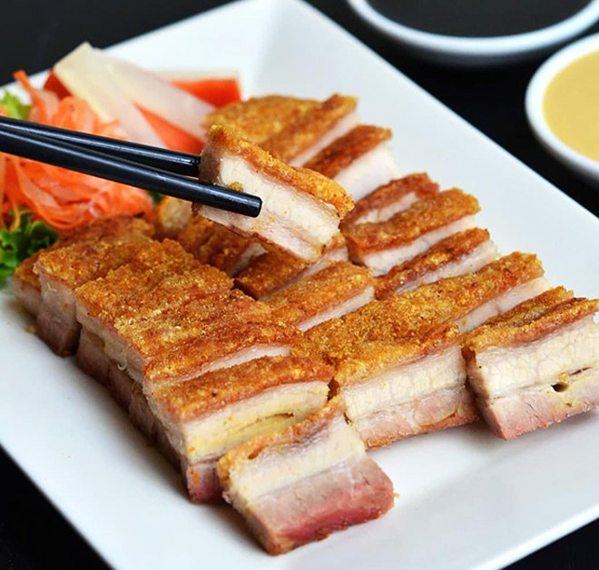

วิธีการทำหมูกรอบอย่างง่าย

วัตถุดิบ
- หมูสามชั้น
- น้ำมันหอย
- พริกไทย
- น้ำส้มสายชู
- เกลือป่น
- กระดาษอะลูมิเนียมฟอยล์
- หม้ออบลมร้อน
วิธีการทำ
- ช้มีดกรีดหนังหมูให้เป็นลายตารางเล็ก ๆ แล้วจิ้มให้พรุนเลย จากนั้นหมักด้วยน้ำมันหอย และพริกไทย ตามชอบ หมักทิ้งไว้ในตู้เย็น 15-30 นาที
- นำหมูสามชั้นหมักออกมาห่อด้วยกระดาษอะลูมิเนียมฟอยล์ แล้วทาด้วยน้ำส้มสายชูให้ทั่วบริเวณหนัง จากนั้นโรยเกลือทับให้หนา ๆ (เพื่อไล่ความชื้นและทำให้หนังหมูตึง)
- นำหมูเข้าอบที่อุณหภูมิ 175 องศาเซลเซียส ประมาณ 30 นาที
- นำหมูที่อบแล้วมากะเทาะเกลือออก จากนั้นนำกระดาษอะลูมิเนียมฟอยล์ออก (ขั้นตอนนี้มีแอบจิ้มหนังหมูอีกนิดด้วยกลัวไม่กรอบ) แล้วนำไปอบต่อ 15-20 นาที จนกว่าจะฟูกรอบตามชอบ
ข้อมูลโภชนาการ
| พลังงาน |
691.5 กิโลแคลอรี่ |
| โปรตีน |
9.8 กรัม |
| คาร์โบไฮเดรต |
0.4 กรัม |
| ไขมัน |
71.9 กรัม |